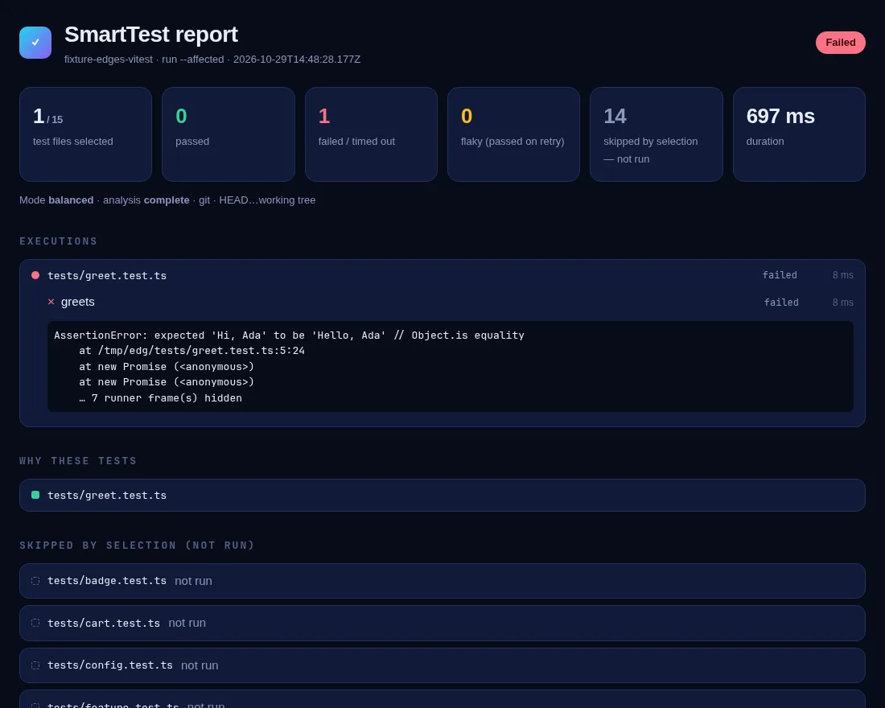
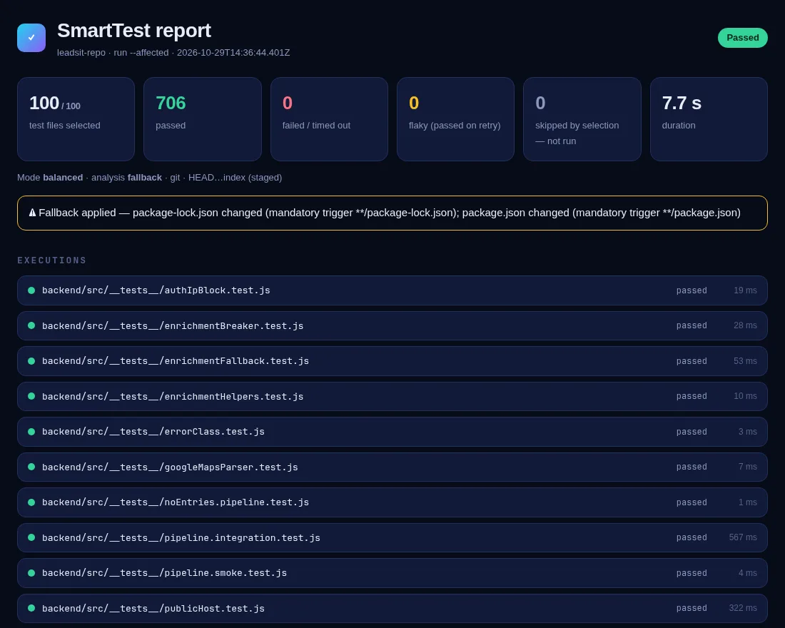
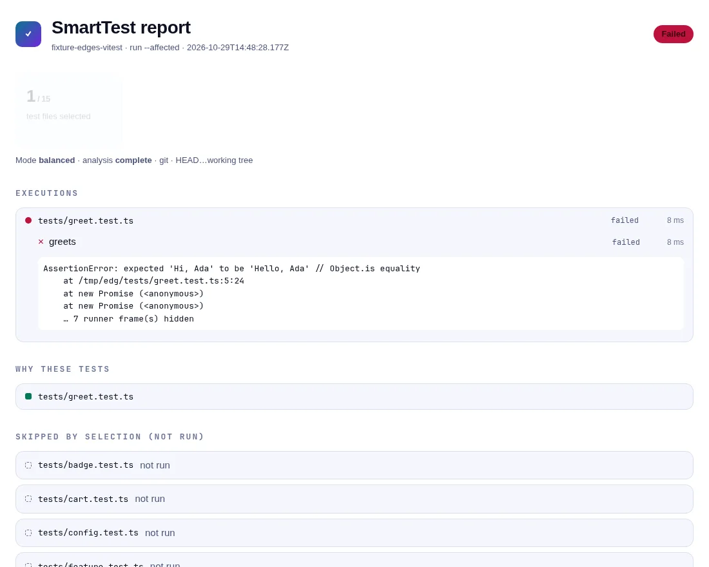
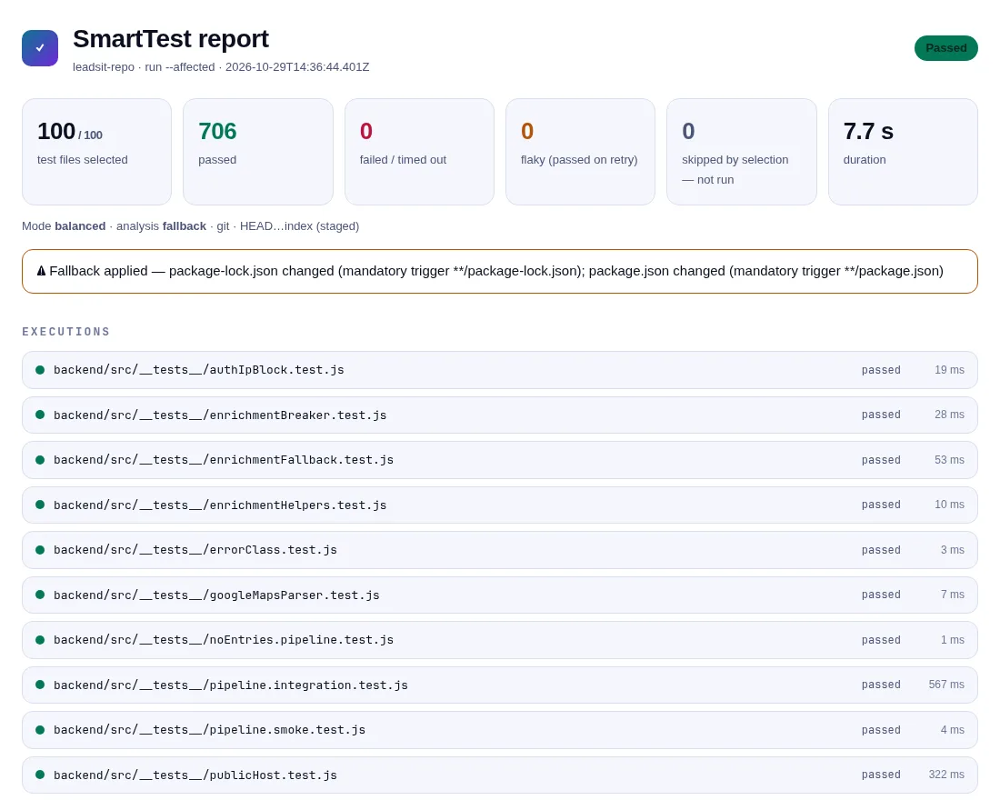

Only the testsa change reaches
SmartTest follows each change through a dependency graph of your TypeScript or JavaScript repository, down to the method, and runs only the tests it reaches with Jest, Vitest or node --test.
3 of 7 test files run
Switch the edits above the panel on and off. The panel shows what SmartTest selects in the example project from this repository, computed by SmartTest itself.
Select a test to see the path from the change to it.
Balanced mode
The default for pull requests and hooks. Every change counts, and a test behind an import SmartTest cannot resolve is selected on its own instead of being ruled out.
Rules can only make the mode stricter. A file marked critical upgrades the whole decision to SAFE.
Safety mode
What happens on a commit
-
First, the change. SmartTest reads what changed from Git: the staged files in a pre-commit hook, the working tree, a branch against its merge-base, or any commit range. Without Git it compares local snapshots of the project.
◇ git · HEAD…index (staged) · 1 changed file(s) · mode balanced
modified src/modules/auth/TokenManager.ts implementation -
Then, the declarations. Each changed line is mapped to the method, function or class around it and classified as comment, formatting, implementation, signature or exported API. An edit inside
verifyis a change toTokenManager.verify, not to every user of the file.changed unit src/modules/auth/TokenManager.ts#TokenManager.verify
not changed TokenManager.issue · the class shell · the file's module code -
Then, the graph. From the changed method SmartTest walks backwards to every test that can reach it, through imports, re-exports, barrels, inheritance, CommonJS, path aliases and workspace packages. Environment keys, Prisma models, translation keys and files read with
fsare nodes too, so a change to one key reaches only the code that reads it.TokenManager.verify → AuthService.validateToken → authenticate → protectedRoute → test/routes/ProtectedRoutes.test.ts
i18n:greeting → src/greet.ts#greet → tests/greet.test.ts -
Then, what it cannot see. An import it cannot resolve is never treated as unrelated: the tests behind it run. When
smarttest tracehas recorded which functions each test ran, a test that can reach the change on paper but never ran the changed code is skipped, with the date of the trace as its reason.SKIPPED (not run) tests/price.test.ts
• Reachable statically, but its trace (2026-10-29) never ran the changed code -
Last, your runner. The selected tests run through the project's own Jest, Vitest or
node --testconfiguration. The report lists every skipped test as not run, never as passed.
The HTML report after a translation key changed in the edges-vitestfixture: one test selected, its failure caught, fourteen not run.
Works with what you have
No plugin in your test runner and no change to your tests. SmartTest asks each runner which files it collects and runs them with your config.
Measured ona real repository
LeadsIt has six projects, no root manifest and three runners. It replaced its pre-commit test steps with smarttest run --staged. These are its numbers with SmartTest {{VERSION}}.

- 706
- tests, the same results through SmartTest as through the three runners
- 0
- missed failures in 52 replayed commits, every miss re-checked on the parent commit
- 17
- percent of test files run over 40 commits sampled from the last 200
- 63
- percent of full-run time saved on the same commits, analysis included
- 23
- seconds to trace all 100 test files across Jest, Vitest and node --test
- 7
- .7
- seconds for the full suite through SmartTest
Documentation
Start with getting started, then read how selection works. Every page is also in the repository under documentation/.


Try it on your repository
SmartTest is not on npm yet. These commands build it from the repository, install it in your project and preview the setup. Nothing is written until you run init --yes.
Set up SmartTest
Node.js 22.12 or newer · Jest, Vitest or node --test
git clone https://github.com/RemiPelloux/SmarttyTest ~/SmarttyTest
cd ~/SmarttyTest && corepack enable && pnpm install && pnpm release:pack
cd ~/code/my-app
npm install -D ~/SmarttyTest/packages/cli/.publish/smarttest-{{VERSION}}.tgz
npx smarttest init --dry-run